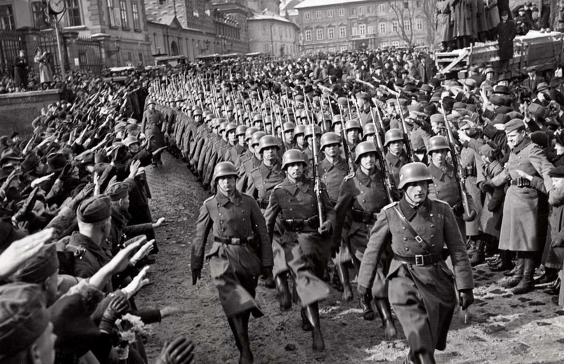
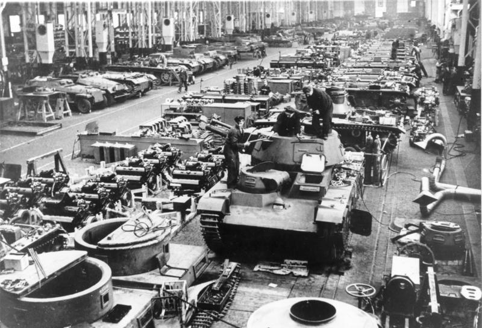
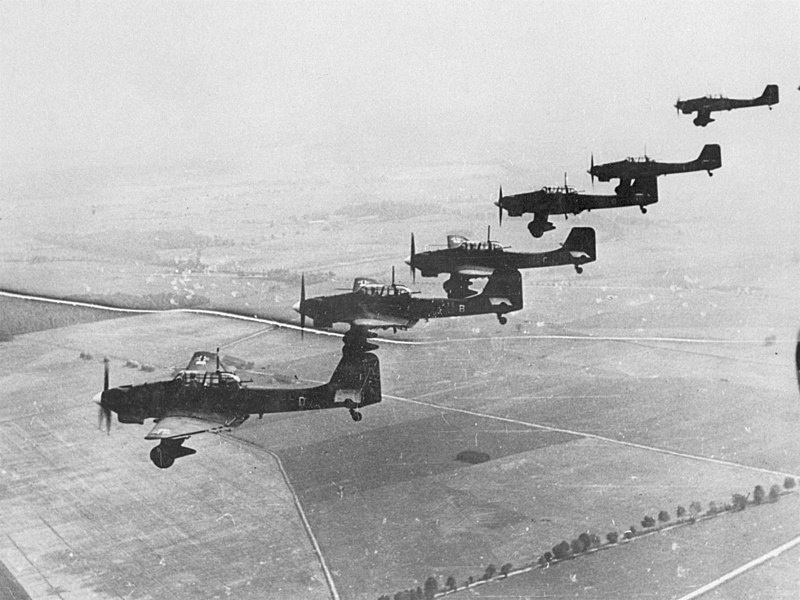
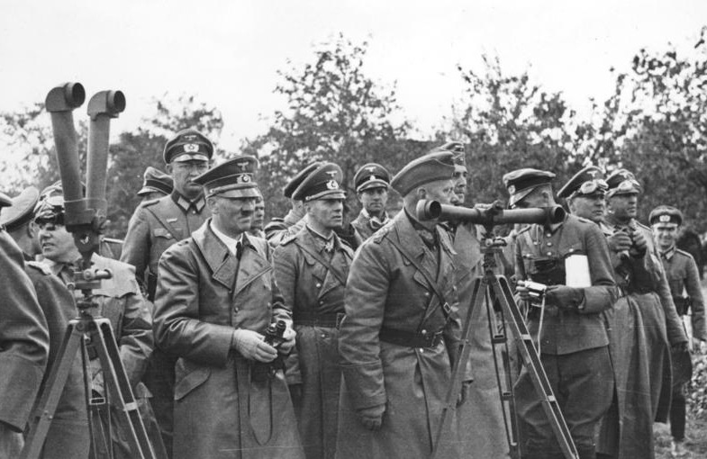
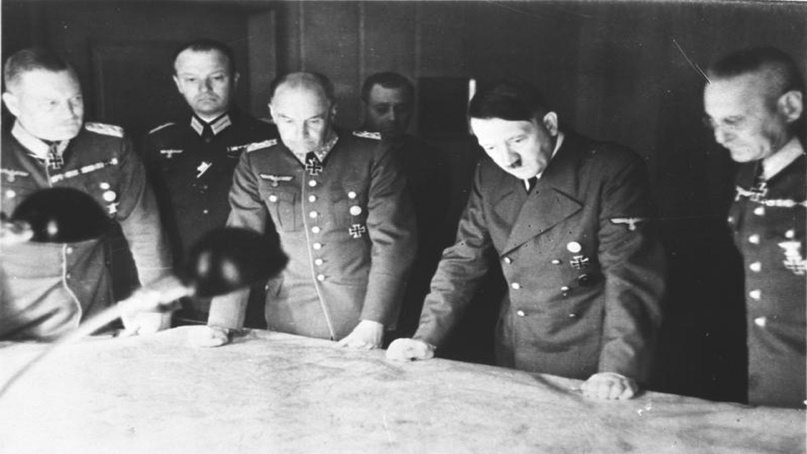

Провалы германской экономики накануне Второй мировой войны
Автор статьи: Максим Вахминцев
Опубликовано: 16 ноября 2023
Опубликовано: 16 ноября 2023
Статья в группе ВК Историческая империя: https://clck.ru/3M6Ehr
Указом Гитлера от 16 марта 1935 года рейхсвер был преобразован в вермахт, а контрактная служба заменена всеобщим призывом. Генерал от кавалерии Зигфрид Вестфаль в своих воспоминаниях отмечает, что Германия тогда могла с большим трудом сформировать лишь 24 дивизии. Гитлер же требовал мобилизации 36-ти дивизий, что ложилось колоссальным бременем на армейский директорат и Генеральный штаб. Они вынуждены были в срочном порядке формировать штабы новых соединений и обеспечивать устойчивую связь между ними.
Как пишет все тот же Вестфаль:
«Армейский директорат боялся, что из-за чрезмерной спешки основа армии будет разрушена. Все нужно было делать под высочайшим давлением. Ни строительство казарм, ни, что еще более важно, обучение новых офицеров невозможно было проводить размеренно и планомерно.»

Указом Гитлера от 16 марта 1935 года рейхсвер был преобразован в вермахт, а контрактная служба заменена всеобщим призывом. Генерал от кавалерии Зигфрид Вестфаль в своих воспоминаниях отмечает, что Германия тогда могла с большим трудом сформировать лишь 24 дивизии. Гитлер же требовал мобилизации 36-ти дивизий, что ложилось колоссальным бременем на армейский директорат и Генеральный штаб. Они вынуждены были в срочном порядке формировать штабы новых соединений и обеспечивать устойчивую связь между ними.
Как пишет все тот же Вестфаль:
«Армейский директорат боялся, что из-за чрезмерной спешки основа армии будет разрушена. Все нужно было делать под высочайшим давлением. Ни строительство казарм, ни, что еще более важно, обучение новых офицеров невозможно было проводить размеренно и планомерно.»
Германские войска на улицах города Брно, 15 марта 1939 г. РГАКФД. Оп. 1. Ал. 8236. Сн. 166. URL: https://clck.ru/3M6CaP
Генерал-майор Альфред Вейдеман отмечал то, что в 1939 году Германия не просто не имела никаких планов использования людских резервов – более того, у нее даже не было точных данных об их численности, поскольку результаты майской переписи населения остались необработанными. Разумеется, это затрудняло эффективный перевод экономики на военные рельсы.
После настоятельных требований Гитлера Генеральный штаб был вынужден увеличить плановую численность ВС до 3,2 млн человек, но набрать в войска такое количество молодежи 1914-1917 гг. рождения не представлялось возможным. Пришлось призывать ветеранов ПМВ - свыше 1 млн человек. Они были, конечно, самыми опытными и обученными солдатами, но им еще предстояло освоить современное оружие.
После настоятельных требований Гитлера Генеральный штаб был вынужден увеличить плановую численность ВС до 3,2 млн человек, но набрать в войска такое количество молодежи 1914-1917 гг. рождения не представлялось возможным. Пришлось призывать ветеранов ПМВ - свыше 1 млн человек. Они были, конечно, самыми опытными и обученными солдатами, но им еще предстояло освоить современное оружие.
В результате нормальный процесс формирования и комплектования соединений оказался нарушен – молодежь восполняла потери на фронтах и заменяла опытных старослужащих, вынужденных вновь нести тяготы строевой службы вместо выполнения задач в тылу. Положение с транспортом у вермахта тоже было не самым лучшим: по свидетельству полковника Германа Теске, в 1939 году Германия имела даже меньше паровозов и вагонов, чем в 1914 году.
Теоретически во время Французской кампании союзники могли даже ограничиться бомбардировкой шоссейных и железных дорог, используемых немцами – даже одного этого могло хватить для того, чтобы расстроить все снабжение вермахта и существенно изменить дальнейший ход войны.
{kind=link}
По свидетельству Вальтера Герлица, начальник Генерального штаба Германии Франц Гальдер, всячески стремившийся избежать войны, буквально умолял послов Франции и Британии нажать на Гитлера и заставить того отказаться от наступления на Польшу. Сам же фюрер накануне сентября 1939 года и представить себе не мог, что германская армия по-прежнему не готова к серьезной войне.
На фоне мобилизационных возможностей западных союзников и Красной армии, вермахт, даже после существенного расширения в 1935 г. и принятия новых программ производства вооружений и боеприпасов, все также не создавал впечатления грозной силы. Блицкриг против Польши, в данном смысле, стал успешным во многом благодаря еще большим проблемам польского военного планирования и вооружения, которыми немцы сумели весьма грамотно и педантично воспользоваться.
Накануне Польской кампании 1939 года немцы еще не успели до конца сформировать отдельные танковые и моторизованные соединения, поскольку долгое время до того считали главной ударной силой сухопутных войск кавалерию и пехоту. Да, к началу 1930-х годов танкам стали уделять гораздо больше внимания, однако в то время они рассматривались только как средство поддержки пехоты. Говорили, что для проведения моторизации войск не хватит бензина и резины, хотя, по свидетельству генерала Шнейдера, германская химия, при более раннем старте соответствующей программы, была в состоянии решить данную проблему.

На фоне мобилизационных возможностей западных союзников и Красной армии, вермахт, даже после существенного расширения в 1935 г. и принятия новых программ производства вооружений и боеприпасов, все также не создавал впечатления грозной силы. Блицкриг против Польши, в данном смысле, стал успешным во многом благодаря еще большим проблемам польского военного планирования и вооружения, которыми немцы сумели весьма грамотно и педантично воспользоваться.
Накануне Польской кампании 1939 года немцы еще не успели до конца сформировать отдельные танковые и моторизованные соединения, поскольку долгое время до того считали главной ударной силой сухопутных войск кавалерию и пехоту. Да, к началу 1930-х годов танкам стали уделять гораздо больше внимания, однако в то время они рассматривались только как средство поддержки пехоты. Говорили, что для проведения моторизации войск не хватит бензина и резины, хотя, по свидетельству генерала Шнейдера, германская химия, при более раннем старте соответствующей программы, была в состоянии решить данную проблему.
{kind=link}
Лишь накануне войн с Польшей и Францией германское командование стало уделять более серьёзное внимание производству танков, ставших главной ударной мощью вермахта. Но, как пишет генерал Шнейдер, "немецкая танковая промышленность в ходе войны никогда не могла даже частично удовлетворить спрос войск на танки всех типов". Гитлер не воспользовался подходящим периодом между 1935 и 1939 годами для того, чтобы создать крупные танковые резервы.
После же старта войны, а затем и начала бомбардировок Германии союзной авиацией, заниматься этим было слишком поздно: загруженность военной промышленности, по словам того же Шнейдера, уже не позволяла наверстать упущенное. О гигантском танке "Маус" и говорить почти не приходится: с военной точки зрения он не представлял собой никакой ценности, но на его создание ушло огромное количество ресурсов, которые немцы могли направить на решение более срочных задач.

После же старта войны, а затем и начала бомбардировок Германии союзной авиацией, заниматься этим было слишком поздно: загруженность военной промышленности, по словам того же Шнейдера, уже не позволяла наверстать упущенное. О гигантском танке "Маус" и говорить почти не приходится: с военной точки зрения он не представлял собой никакой ценности, но на его создание ушло огромное количество ресурсов, которые немцы могли направить на решение более срочных задач.
{kind=link}
Пикирующие бомбардировщики Ju 87B над Польшей, сентябрь — октябрь 1939. Фото Бундесархива. URL: https://clck.ru/3M6DqA
Что касается других родов войск, в первую очередь люфтваффе, то, по свидетельству генерала, накануне начала войны в Германии было крайне мало заводов, производивших синтетическое горючее, потому боеспособность люфтваффе зависела от поставок из Америки тетраэтил свинца. В 1939 году Германия располагала минимальным количеством сырья, которое после введения против нее блокады стало еще меньше.
Компенсировать зависимость страны от импортного сырья могли создаваемые в рамках 4-х летнего плана заводы, но по прогнозам они должны были выйти на полную мощность только в 1943 году. Запасов меди хватило бы лишь на 7 месяцев войны, а во время Польской кампании люфтваффе успели за 2 недели израсходовать все свои запасы бомб. То же самое могло произойти и с артиллерийскими снарядами, но немцам сильно повезло, что война с Польшей прошла столь скоротечно.

Компенсировать зависимость страны от импортного сырья могли создаваемые в рамках 4-х летнего плана заводы, но по прогнозам они должны были выйти на полную мощность только в 1943 году. Запасов меди хватило бы лишь на 7 месяцев войны, а во время Польской кампании люфтваффе успели за 2 недели израсходовать все свои запасы бомб. То же самое могло произойти и с артиллерийскими снарядами, но немцам сильно повезло, что война с Польшей прошла столь скоротечно.
{kind=link}
А. Гитлер, Э. Роммель, М. Борман и В. фон Рейхенау в Польше. Фото Бундесархива. URL: https://clck.ru/3M6E72
Генерал Шнейдер отмечал и то, что военной промышленностью Германии при Гитлере руководили в основном не офицеры, а гражданские, причем многие из них были партийными ставленниками. В вопросе организации военного производства Гитлер вновь проявил непоследовательность. В апреле 1940 года руководители сухопутных войск, флота и авиации убедили его, по настоянию генерала Беккера – начальника управления вооружений – дать согласие на создание единого штаба для руководства управлениями вооружений всех трех родов войск.
Но фюрер очень быстро отменил свое решение, когда один из крупных промышленников стал заверять его в том, что производительность частных оружейных предприятий будет гораздо выше при отсутствии госконтроля. Осенью 1940 года Гитлер издал указ, ставший, по словам Шнейдера, «одним из самых бессмысленных»: согласно нему производство тех видов оружия, что не могли быть поставлены на фронт и использованы там в течение одного года, прекращалось. Кроме того, германское правительство аж до 1942 года не вводило постановлений об обязательном женском труде. Таковое появилось с подачи Геринга как раз в 1942 году, но и оно, по словам генерала Шейдемана, «содержало много исключений».

Но фюрер очень быстро отменил свое решение, когда один из крупных промышленников стал заверять его в том, что производительность частных оружейных предприятий будет гораздо выше при отсутствии госконтроля. Осенью 1940 года Гитлер издал указ, ставший, по словам Шнейдера, «одним из самых бессмысленных»: согласно нему производство тех видов оружия, что не могли быть поставлены на фронт и использованы там в течение одного года, прекращалось. Кроме того, германское правительство аж до 1942 года не вводило постановлений об обязательном женском труде. Таковое появилось с подачи Геринга как раз в 1942 году, но и оно, по словам генерала Шейдемана, «содержало много исключений».
{kind=link}
Таким образом, Германия не смогла заблаговременно обеспечить централизацию экономики, необходимую для ведения «тотальной войны». Никто не учитывал реальный экономический потенциал страны, потому анонсируемые Гитлером и его окружением амбициозные мероприятия оставались несогласованными и нереалистичными. Не в последнюю очередь это объяснялось, опять же тем, что еще с 1938 года у Германии фактически отсутствовал единый кабинет министров.
Из-за всех этих факторов военная промышленность Германии росла лишь постепенно: в 1940 году военное производство составляло менее 15 % от всей промышленности Германии, в 1941 – 19, в 1942 – 26, в 1943 – 38 и лишь в 1944 году оно достигло показателя в 50 %. На этом основании генерал Шейдеман делает вывод, что «экономически война была проиграна Германией еще в 1940-1941 гг.».
Рекомендуемая литература
Вестфаль З. Германская армия на Западном фронте. Воспоминания начальника Генерального штаба. 1939-1945. — М.: Центрполиграф, 2007.
Гёрлиц В. Германский Генеральный штаб. История и структура. 1657—1945 / Пер. с англ. С. В. Лисогорского. — М.: Центрполиграф, 2005.
Мировая война. 1939–1945. — М: ACT; СПб.: Полигон, 2000.
Роковые решения. — М.: Воениздат, 1958.
Шпеер А. Третий рейх изнутри. Воспоминания рейхсминистра военной промышленности. 1930-1945 / Перевод С. Лисогорского. — М.: Центрполиграф, 2005.
Из-за всех этих факторов военная промышленность Германии росла лишь постепенно: в 1940 году военное производство составляло менее 15 % от всей промышленности Германии, в 1941 – 19, в 1942 – 26, в 1943 – 38 и лишь в 1944 году оно достигло показателя в 50 %. На этом основании генерал Шейдеман делает вывод, что «экономически война была проиграна Германией еще в 1940-1941 гг.».
Рекомендуемая литература
Вестфаль З. Германская армия на Западном фронте. Воспоминания начальника Генерального штаба. 1939-1945. — М.: Центрполиграф, 2007.
Гёрлиц В. Германский Генеральный штаб. История и структура. 1657—1945 / Пер. с англ. С. В. Лисогорского. — М.: Центрполиграф, 2005.
Мировая война. 1939–1945. — М: ACT; СПб.: Полигон, 2000.
Роковые решения. — М.: Воениздат, 1958.
Шпеер А. Третий рейх изнутри. Воспоминания рейхсминистра военной промышленности. 1930-1945 / Перевод С. Лисогорского. — М.: Центрполиграф, 2005.